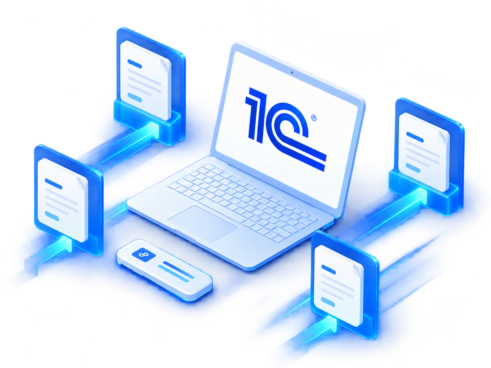
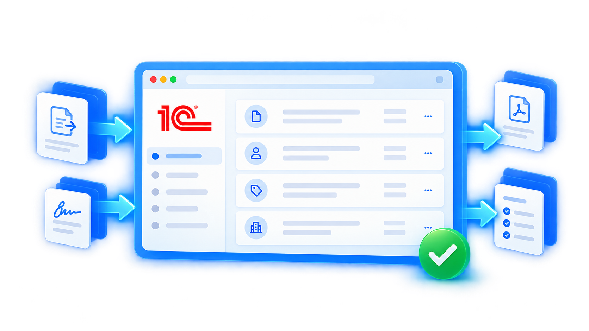

Документы сразу в 1С
Полученные документы не нужно вручную переносить из другой системы.
Обменивайтесь юридически значимыми документами с контрагентами прямо из программы 1С — без ручной выгрузки и загрузки документов.
Отправляйте и получайте УПД, счета-фактуры, накладные, акты и другие документы в привычном интерфейсе 1С.

Полученные документы не нужно вручную переносить из другой системы.
Отправка и получение документов происходят электронно без ожидания бумажных оригиналов.
1С помогает формировать документы учёта на основании входящих электронных документов.
Документы хранятся в информационной базе 1С вместе со связанными документами учёта.
1С-ЭДО поддерживает актуальные форматы электронных документов и изменения законодательства.
Создавайте, подписывайте, отправляйте и получайте электронные документы в привычном интерфейсе 1С. В типовых программах 1С, поддерживающих электронный обмен, отдельные расширения и дополнительная интеграция обычно не требуются.

Создаёте и подписываете документ в программе 1С.
Передаёт документ через выбранного оператора электронного документооборота.
Получает документ, подписывает его и отправляет ответ.
Чтобы отказаться от части бумажного документооборота без внедрения отдельной системы.
Для регулярного обмена первичными документами, УПД и документами по поставкам.
Чтобы сократить ручную обработку входящих и исходящих документов.
Для обмена с контрагентами, которые используют других операторов ЭДО.
Поможем пройти путь от проверки вашей 1С до первого электронного обмена с контрагентом.
Уточним конфигурацию, версию и готовность к работе с ЭДО.
Поможем настроить учётную запись, оператора и электронную подпись.
Поможем настроить обмен и начать работу с контрагентами.
ВИТ поможет определить, какие условия действуют для вашей организации и какой вариант подходит под объём документооборота. Актуальные тарифы и лимиты — на официальном сайте 1С-ЭДО.
Проверим вашу 1С и УКЭП, настроим сервис и поможем начать обмен документами с контрагентами.
Как правило, нет — 1С-ЭДО работает непосредственно в поддерживаемых программах «1С:Предприятие». Механизмы электронного документооборота встроены в типовые конфигурации.
Для юридически значимого электронного обмена используется усиленная квалифицированная электронная подпись. Её можно оформить через сервисы фирмы «1С», в том числе 1С:Подпись.
Да. 1С-ЭДО поддерживает обмен с пользователями других операторов через роуминг. Для многих операторов настройка выполняется автоматически, в отдельных случаях требуется настройка роуминга.
ВИТ проверит конфигурацию и версию программы и поможет настроить существующую базу для работы с ЭДО через мастер подключения.
Да. Получение входящих документов в 1С-ЭДО не тарифицируется.
1С-ЭДО — общий электронный обмен юридически значимыми документами с контрагентами: УПД, счета-фактуры, акты и другие форматы. 1С-ЭПД — специализированная работа с электронными перевозочными документами для участников грузоперевозок.
Да. Специалисты ВИТ проверят вашу 1С, помогут настроить учётную запись и электронную подпись, запустить обмен и отправить первый документ контрагенту.